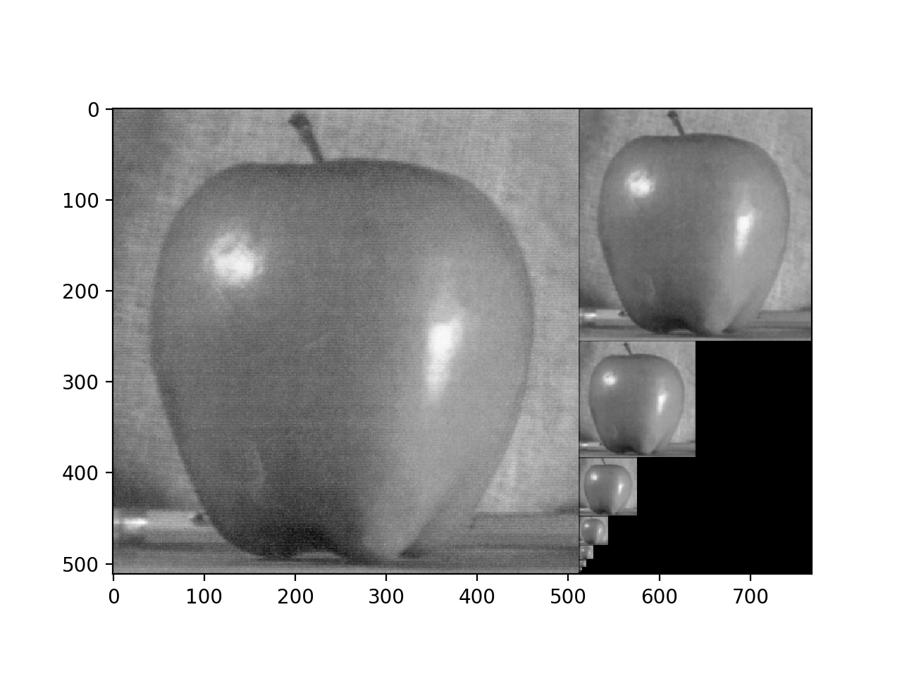
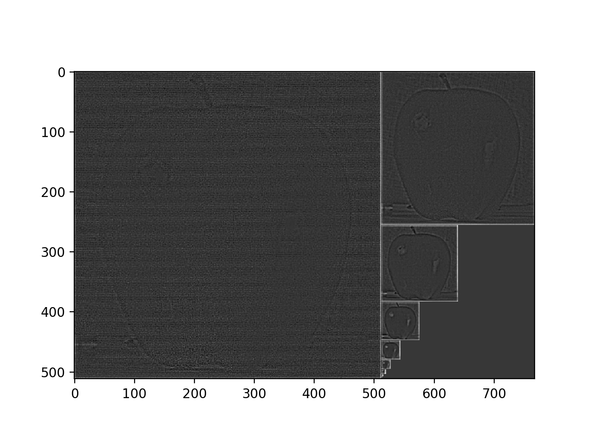
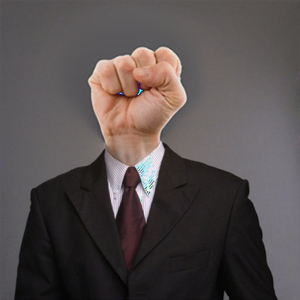
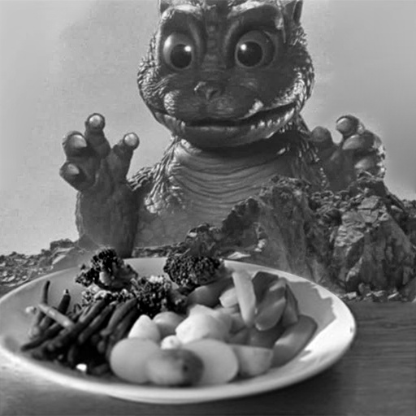
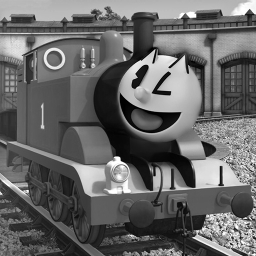
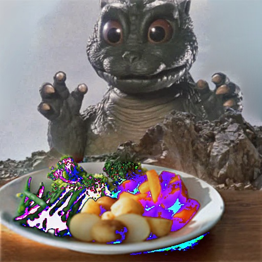
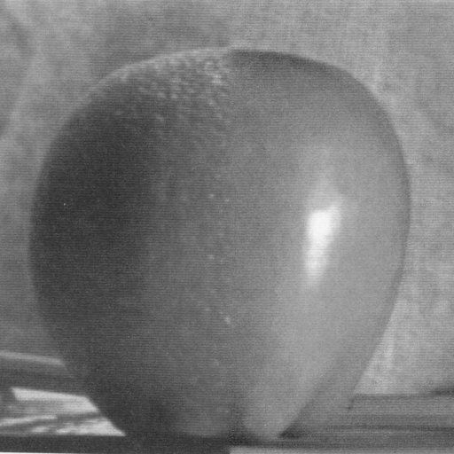
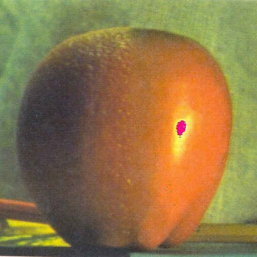
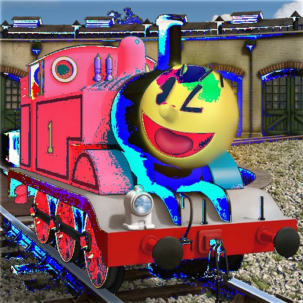

In the field of image processing, image pyramids are a robust means of storing and representing image data. Though perhaps most notably useful as a compression and scaling tool, representation of images in this form allows for interesting manipulation of image information in ways that would otherwise be difficult.
To understand the benefits provided by pyramids, one must first understand their construction. The two most common pyramids - gaussian pyramids and laplacian pyramids - are created through a series of procedural operations that result in repeatedly decimated images. Gaussian pyramids are created by downscaling an image by a factor of two per side (a 4x decrease in overall surface area) by discarding every other pixel, combining the remaining pixels in a reduced image, and blurring the result to avoid noise and artifacting. This procedure continues until the smallest possible size (2x2, in the case of a square image) is reached, at which point the "top" of the pyramid has been achieved.
Composite image representing a gaussian pyramid.
A close relative to the gaussian pyramid, the laplacian pyramid is derived from taking the difference of each blurred gaussian layer from the unblurred original one step down from the pyramid. The higher layer is scaled up, blurred with a gaussian filter, and subtracted from the lower layer to obtain the corresponding laplacian.
Composite image representing a laplacian pyramid.
Together, a gaussian pyramid and laplacian pyramid constitute a complete representation of an image from its original size down to its smallest possible dimensions. In practice, all but the smallest layer of the Gaussian pyramid and the entirety of the laplacian pyramid are needed to reconstruct the image at all pyramid sizes.
Image pyramids can also be used to blend two images in a way that helps mask its composite nature. This is done by using a binary mask to merge the laplacian pyramid of both images at every level and then collapsing the laplacian pyramid in on itself (this is achieved by expanding each upper layer to the size of the layer directly beneath it). The final results make for an entertaining visual spectacle, and appear fairly well constructed with proper masking and placement. While possible in both black and white as well as color, the code written for this assignment nevertheless appears to have some difficulty in split-processing each channel of a color image individually, with odd, glitch like artifacts in many of the color composites. This likely has less to do with the blending algorithm itself as written and more with the means by which image channels are individually processed - though handling channels by slicing tensors should be proper in principle, there appears to be unforeseen difficulties with it in practice.
This process lends itself to sureal imagery.
Above is an example of a fairly successful image composite. The image of the fist here was rescaled, repositioned and made to have a matching background prior to masking; by preprocessing as such, the two line up crisply and appear fairly seamless. The same surprisingly applies also to color, albeit with odd artifacts as previously discussed.
Still fairly clean.
Another successful composite can be seen with this image combining a plate of vegetables with a rendering of godzilla. Again, positioning, scale, and consideration of composition are key aspects that lead to the success of this image.
Gah! It's going to eat the vegetables!
Yet another example clearly illustrates some of the key aspects needed for a successful composite. Here, we see PacMan's face composited over that of Thomas the Tank Engine.
Relying only on a binary mask, laplacian blending is best suited for composites involving simple shapes and images that already possess fairly high visual compatibility to begin with. In the case of backgrounds and other ambient image textures, a close match in tone and noise level are needed to avoid a strong dissonance at the border of where the two images are combined. Some evidence of this can be seen in the color version of the Godzilla composite, where the sky and the background of the plate image show some signs of differentiation. In this case, the casting of the image to grayscale actually aids in bolstering the cohesion of the image, as the two backgrounds are neverless fairly similar in tone.
Note the increased visibility of the mask border.
Ultimately, laplacian blending - as well as its more complex counterparts - is a powerful image processing tool whose applications are numerous as they are fascinating. With applications ranging from surrealist art to panorama stiching, the value of blending techniques is not to be underestimated.
|  |
|   |